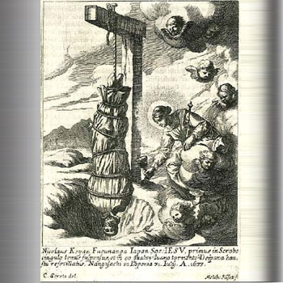

Isusovački blaženici
Brat
Bl. Nikola Keian Fukunaga
† 1633.
Japanski brat i cijenjeni propovjednik Nicholas Fukunaga vratio se iz progonstva radi služenja vjernicima. U Nagasakiju je podnio mučenje i ostao postojan.
Tekst je preveden i prilagođen uz pomoć umjetne inteligencije.

Izvor slike
- Spomendan
- 31. srpnja
- Zaštitništvo
- Nije navedeno u izvoru
- Životni vijek
- † 1633.
- Djelovanje
- Obrazovanje i poučavanje vjere · Progoni i progonstvo · Mučeništvo
- Razdoblje
- 17. stoljeće
- Rođenje — dostupni podaci
- Datum i godina rođenja nisu potvrđeni u provjerenim izvorima.
- Mjesto rođenja
- Japan
- Datum smrti
- 31.07.1633.
- Mjesto smrti/mučeništva
- Nagasaki, Japan
- Okolnosti smrti/mučeništva
- Mučen vješanjem naglavce nad jamom tijekom progona kršćana.
- Uloga
- Brat
- Mučenik
- Da
- Ostale oznake
- Mučenik progona kršćana u Japanu
- Pripadnost
- Isusovac
- Drugi oblici imena
- Nicholas Keian Fukunaga · Nicholas
Životopis
Nicholas Keian Fukunaga odrastao je u kršćanskoj obitelji i školovao se u isusovačkom sjemeništu. U Družbu je primljen 1588., nastavio studije u Amakusi i položio zavjete redovničkoga brata. Kao vjeroučitelj osobito se isticao propovijedanjem. Subraća su preporučivala njegovo svećeničko ređenje, ali u Japanu nije bilo biskupa koji bi ga mogao zarediti.
Japanska biskupska komisija smješta njegovo podrijetlo u Nagaharu u pokrajini Ōmi te spominje školovanje u Azuchiju. Do 1614. služio je u Hakati. Zatim je protjeran u Macao, odakle se 1619. potajno vratio. Najviše je djelovao na području Omure, na otoku Kyushu. Sačuvani isusovački izvještaji posebno bilježe njegov navještaj na japanskom. Ta se služba nastavila i kada više nije bilo slobode javnoga pastoralnog rada.
U srpnju 1633. zatočen je u Nagasakiju s nekadašnjim školskim drugovima Julijanom Nakaurom, Sikstom Iyom i Pavlom Saitom. Vlasti su uvele mučenje vješanjem nad jamom kako bi izazvale odricanje od vjere, a izbjegle okupljanje vjernika oko javnih pogubljenja. Fukunaga je tom mučenju podvrgnut 28. srpnja. Nije izrazio žaljenje zbog vlastite vjernosti, nego što nije sve sunarodnjake priveo Kristu. Umro je 31. srpnja, na blagdan svetoga Ignacija.
O završnim danima svjedočili su Portugalci rođeni u Nagasakiju koji su razumjeli japanski. Čuli su razgovor s ispitivačima i njegove posljednje molitve, među njima marijanske litanije. Svoja su sjećanja iznijeli u postupku u Macau 1634. Istoga je dana kada je počelo njegovo mučenje spaljen drugi kršćanin, Mihael Kusuriya; njegove karitativne dužnosti pripadaju zasebnom životopisu. Fukunaga je 2008. proglašen blaženim sa 187 drugih japanskih mučenika, među kojima su bila četvorica isusovaca.
Tekst je preveden i prilagođen uz pomoć umjetne inteligencije.
Pročitaj više na izvornoj stranici ↗